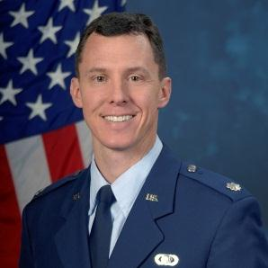
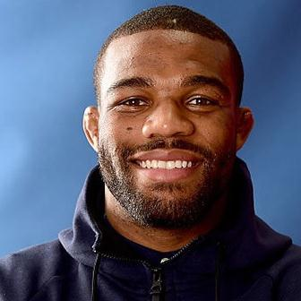
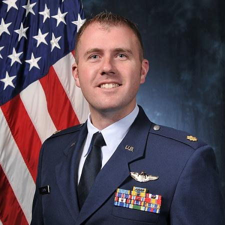

Lt. Col. Kevin Basik

- USAFA Class of 1993
- Air Force Senior Representative on Professionalism
- "An Ethos that Survives Everyday Life"
A proud 1993 US Air Force Academy graduate, Lieutenant Colonel Kevin Basik, PhD, has been involved in values-based leadership development for the better part of his 23 year career. He has a Master's degree in Industrial/Organizational Psychology and a PhD in Organizational Behavior. He has studied and applied his expertise at organizations including the US Air Force Academy’s Department of Behavioral Sciences & Leadership, the US Air Force Academy's Center for Character & Leadership Development, The Citadel, and Headquarters Air Force Reserve Officer Training Corps. Additionally, he served as the Air Force Representative to the Secretary of Defense on matters of professionalism and values-based leadership. He's a loyal husband of 22 years and the proud, committed father of two daughters.
Mr. Jordan Burroughs

- Olympic Wrestling Gold Medalist
Mr. Jordan Burroughs grew up in the town of Sicklerville, New Jersey, as the youngest of four children and began wrestling when he was just five years old. He never outgrew his passion, and after a dominant high school career that included a state and national title in 2006, he accepted a scholarship offer to the University of Nebraska. Mr. Burroughs had a relatively tough transition at Nebraska, marked by a modest 16-13 record as a freshman, but over the next three seasons, he amassed 111 wins against 6 losses, finishing his junior and senior years undefeated. He concluded his collegiate career with 3 Big 12 titles, 2 NCAA titles, and was awarded with the Hodge Trophy as a senior, recognizing hiim as the nation’s top collegiate wrestler. In 2011, Mr. Burroughs transitioned seamlessly into international competition, winning his first US Open title just three weeks after the NCAA Championships, and followed it up by making his first World Team later that spring, becoming only the fourth wrestler in history to win an NCAA Championship and World Title in the same year. In 2012, an Olympic gold medal followed, as did two more World Titles, including an improbable championship performance in 2013 when he competed, and won, having broken his ankle only a month before. Mr. Burroughs made his second Olympic Team in April of 2016 and was primed to capture his second Olympic Gold in Rio. Unfortunately, as a heavy favorite, he lost his quarterfinal match to Aniuar Geduev of Russia, and for the first time in his international career he did not end up on the podium. Mr. Burroughs took the loss with unparalleled dignity, honesty, and class. He plans to return to the top of the podium later this year in Paris at the 2017 World Championships. Mr. Burroughs and his wife Lauren have two children--Beacon and Ora. They reside in Lincoln, Nebraska.
Major Joe Chapa

- Senior Instructor of Philosophy
Major Joseph Chapa is a U.S. Air Force Major and an Instructor of Philosophy at the U.S. Air Force Academy. He holds a Master's Degree in Philosophy from Boston College, a Master's Degree in Theological Studies from Liberty Baptist Theological Seminary and a Bachelor of Arts Degree in Philosophy from Boston University. His areas of expertise include the Just War Tradition and military ethics, with an emphasis on the ethics of remote and autonomous weapons. He is also an Air Force senior pilot with over 1,000 flight and instructor hours in support of major U.S. combat and humanitarian operations.